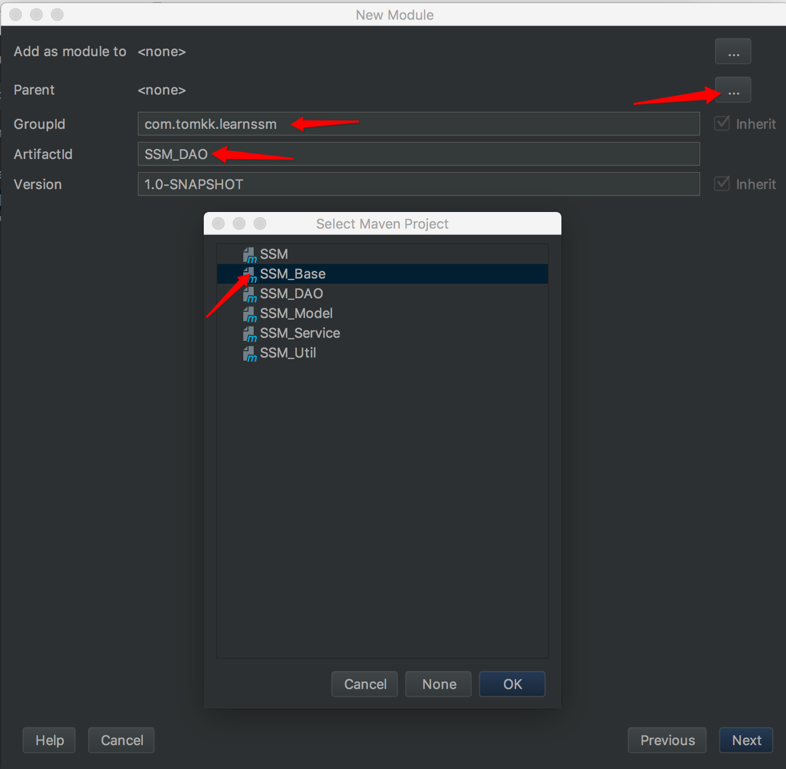

环境
IDE：Intellij IDEA 2017.3
Java：1.8
创建工程
目录结构
工程为多模块结构，采用maven组织依赖关系：

目录结构解释
SSM：用于存放Controller文件和springboot启动类

SSM_Base：用于集中管理所有依赖的父模块
SSM_DAO：用于存放Mapper接口和sql映射文件，以及逆向工程的配置文件
SSM_Model：用于存放实体类

SSM_Service：用于存放Service接口和Service实现类
SSM_Util：用于存放一些工具类
项目依赖结构
以SSM_DAO为例展示创建过程


- 

配置
pom文件配置
SSM模块的pom文件
1 | <?xml version="1.0" encoding="UTF-8"?> |
SSM_Base的pom文件
1 | <?xml version="1.0" encoding="UTF-8"?> |
SSM_DAO的pom文件
1 | <?xml version="1.0" encoding="UTF-8"?> |
SSM_Model的pom文件
1 | <?xml version="1.0" encoding="UTF-8"?> |
SSM_Service的pom文件
1 | <?xml version="1.0" encoding="UTF-8"?> |
SSM_Util的pom文件
1 | <?xml version="1.0" encoding="UTF-8"?> |
逆向工程配置
pom插件添加【官方参考文档】
1 | <!--mybatis逆向工程插件--> |
generatorConfig.xml【官方参考文档】
1 | <?xml version="1.0" encoding="UTF-8"?> |
application.properties配置【application.properties官方文档参考】
1 | #应用名称 #请在启动程序是动态设置该参数 |
log4j.properties【log4j.properties参考】
1 | log4j.rootLogger=DEBUG,Console |
ApplicationMain.java
1 | import org.mybatis.spring.annotation.MapperScan; |
遇到的问题
generatorConfig.xml中targetProject的路径是以SSM_DAO的根路径为标准
在编译的时候找不到SSM_DAO模块，通过修改其pom文件的
<packaging>pom</packaging>为<packaging>jar</packaging>解决启动的时候，报错java.lang.IllegalArgumentException: At least one base package must be specified，因为mapper接口和mapper.xml没有对应，需要检查classpath下文件是否都被加载。通过指定@MapperScan(“com.neo.mapper”)解决
Cannot determine embedded database driver class for database type NONE 因为applicartion.properties里面关于数据库的配置关键字写错了
运行时报错org.apache.ibatis.binding.BindingException: Invalid bound statement (not found) ，因为把xml文件放到了source folder中，默认不会被加载到classes文件夹中，通过在pom中配置以下解决
1
2
3
4
5
6
7
8
9
10
11
12<build>
<!--强制将source folder目录下的xml文件加入-->
<resources>
<resource>
<directory>src/main/java</directory>
<includes>
<include>**/*.xml</include>
</includes>
<filtering>false</filtering>
</resource>
</resources>
</build>无法通过main函数来启动spring boot但是可以通过maven插件启动spring-boot:run。 通过将spring-boot-starter-tomcat的
<scope>provided</scope>注释解决Intellij idea spring boot热部署
- 加入依赖spring-boot-devtools
- 通过main函数来启动
- 修改完文件以后build一下（可以设置自动build）